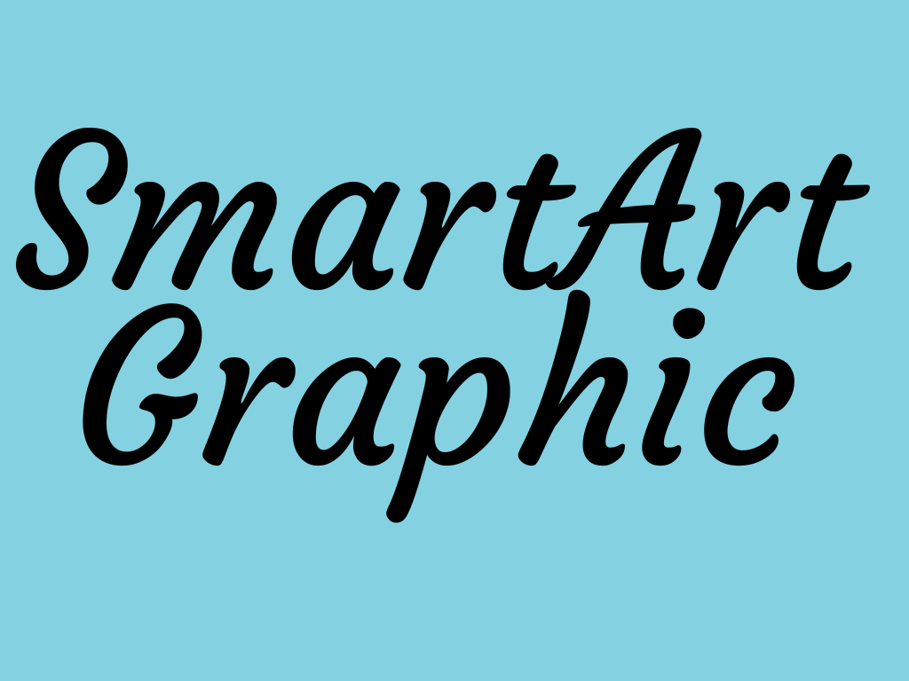
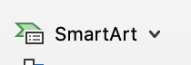

The power of SmartArt in communicating concepts visually
Answer the following questions
Choose the correct options, a variety of predesigned graphics is available at the dialog box of:
a) Picture
b) SmartArt
c) 3D models

Choose from the following options, to modify the color of a used graphic select:
a) SmartArt Design tab
b) Design tab
c) Draw tab

What is the appropriate layout that shows how parts are related to the whole?
Click on one of the following choices:
a) Hierarchy tab
b) List
c) Matrix